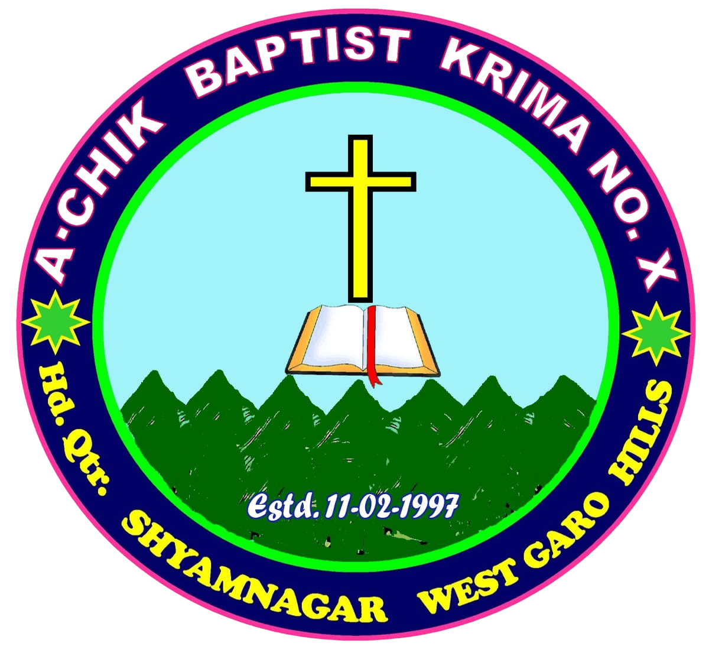
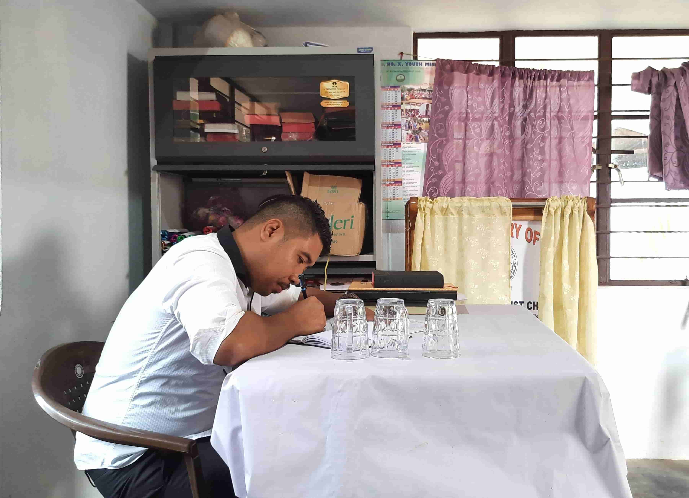

Singgimari Baptist Mondoli
Sunday Worship: 11:00 AM
Location: Selsella Singgimari, West Garo Hills, Meghalaya
Office Hours: 10:00 AM - 3:00 PM Monday - SaturdayMondoli Office'oni pilak nanga kamrangko; jedake information, co-ordination, assistance, committees aro board'rang; Kristoni Mondoliko rikanio nanganirangko chu·sokatna ma·mong dake kam ka·a.
Association & Fellowship
Singgimari Baptist Mondoli Garo Baptist Convention ba ABDK, Krima No. 10-oni Mondoli ge·sa ong·paa
-
Garo Baptist Convention
A·chik Baptist Dal·gipa Krima
-
Krimas
ABDK'ni ning·ao a·ja'ni kri sepanggrikgipa nangrimgimin Mondoli'rang
-

Krima-X Hq. Shyamnagar Baptist Church | Garo Hills Salgipeng, Meghalaya.(Krima No. 10)-
 Singgimari Baptist Church
Estd. 2022
Singgimari Baptist Church
Estd. 2022
-
-
-
Krimas
ABDK'ni ning·ao a·ja'ni kri sepanggrikgipa nangrimgimin Mondoli'rang
Mondoliko rikna miksonganirang:
Isolni tanggipa Mondoliko Uni rasongna rikna miksonganirangko ka·mao mesokatenga.
- Isolko mandera·an baksa Gisiko aro bebeo olakkina. Johan 4:23-24; Git.100:1-5.
- Jakgitelgipa Mondoli ong·e Bebera·ani ma·drangrangko nirok simsake bebera·aniko mangrakdapatna. Wat. 20:28-31; I Pitor 5:1-4.
- Jakgitelgipa Kristoni Mondoliko ka·sagrikao bakrimerikachi ku·mong nangrime Kristoni donanggimin Great Commission-ko chu·sokatna sninggipa dakna aro Pagipa, Degipa aro Gisik Rongtalgipani bimungo baptize ka·atna. Matti 28:19-20.
- Isol-ni kattao pangchake Baptist Mondoliko rikna aro Uni kattao pangchake agana, skina, didina aro mol·molna.
- Christian education-ko on·a aro Isolni kattao tarienba Isolna kengipa manderangko Mondolio, songsaro aro jatko re·dilgipa dilgiparangko ong·katatna. Deut.6:1-9; Matti 28:20.
- Krima aro Dal·gipa Krima aro CBCNEI baksa bakrime kamrangko ka·na.
- Dal·gipa Krimani ning·o donggipa Mondoli ge·sa ge·gipin baksa nangrimaniko dakna aro dakchakgrikna.
Ong·nasienggipa Events
Kobor aro Christian chanchibewalanirang
Gitalgipa koborang, Sonapod, aro Noksarang
Office Staffs
Office'o kam ka·enggipa bimchipgipa aro Mondoli'ko re·dilna seoke okamaniko man·gipa gamgiparang.
| #. | Name | Designation | Contact |
|---|---|---|---|
| 1. | Mr. Tengsan A. Sangma | Pastor | +91-9863204803 |
| 2. | Mr. Hebalson Marak | Associate Pastor | +91-9863204803 |
| 3. | Mr. Lawrence N. Marak | Associate Pastor | +91-9863204803 |
| 4. | Mrs. Renish A. Sangma | Women Director | +91-9863204803 |
| 5. | Mrs. Brelidha M. Sangma | Women Joint Director | +91-9863204803 |
| 6. | Mr. Brelling M. Sangma | Youth Director | +91-9863204803 |
| 7. | Mr. Mexbredy M. Sangma | Youth Joint Director | +91-9863204803 |
| 8. | Mr. Metchen M. Sangma | Accountant | +91-9863204803 |
| 9. | Mrs. Rollina A. Sangma | Treasurer | +91-9863204803 |
| 10. | Mr. Rongseng A. Sangma | Worship Secretary | +91-9863204803 |
| 11. | Mr. Tesreng Sangma | Chawkidar | +91-9863204803 |
In Grateful Recognition

Office staff-rang uamangna Mondolini on·gimin domain'o pangchake Mondolini Department & Ministry'rangni activity-rangko nambate function ong·atna man·na gita gisik aro bil'ko on·e Kristona gamenga.
Singgimari Baptist Mondoli'o man·gopgimin nokdangrangni bebe ra·gipa sakanti uamangna Isolko mitelna krachongmota.
Uamangni bimchipgipa kamrang Songsar'ni ia chasong baksa re·anio Mondolina sakki aro uamangni man·gni Salgio donggipa Pagipaoni ong·baskachina.
History of Church and the Community
— Founded 1930
Gilja nokko rike ka·dilchenggiparangni kan·dikgipa
Itihas
5-minute read — Click to open
Talatchengani: Singgimari Songo Gilja Nokko rike. Isolko olakibaani gimin see rakkianirang dongjagenchim ong·oba, skangni dilbaenggipa Ma·a Paa aro skigiparango sing·sandie sena cholko on·ahanina, Salgini Paa Isolko aro pilak dilgipa Ma·a-Paarangko mitela.
Songdongchenggipa Pagitchamrangni Torom Nokko Rike Isolko Olakibaani: Singgimari Songo skangode Kristian ong·gipa manderang aro Isolko olakianirang dongjachim; maina ua chasongo songdonggipa pilakan Nepalrangsa, uamangni Matma-Matchurangko rakkie, nokking 100-na batpile songdongachim ine agana.
1926-bilsimango, Nudan R. Marak aro Rangmi A. Sangma (Rutmoni-Pa) jiksesa Chokpot Bibragreoni re·bae, uni Sadutang Rangkil baksa Dengasi Songo adita bilsirangna dongbaaha. Unoni 1930 bilsio pe·na-wang·na, game-su·e, cha·ani biaprang bang·ani gimin Singgimari songona songdongkamna re·baaha.
1934 bilsio, Jiran Rema (Ameng-pa) Rengdi Marak, Tina (Bjion-pa) Samanda-oni, Mohan Ch. Marak, Ramsi A. Sangma (Repol-pa) Karukol-oni katbae katbae songdongpaaha. Aro Prem (Lemon Pa) Gajak Ch. Marak, Singdon (Nangjeng Pa), Kanjing (Mehal Pa) Sese B. Marak aro gipin biap rangoni re·bae apsan songdongaha. Uamang pilakan Kristoko bebera·anio dongkamgiparang ong·e, Torom Nokko rike Isolko olakiaha ine agana; je biapan da·o, Lt. Ibang B. Marak (Linder Pa)-ni dongchakenggipani sepango ong·achim ine agana.
Indake skanggipa chasongo Torom Nokko rike Isolko olakidilchenggiparang:
- Lt. Dingsan N. Marak (Sunil Pa)
- Lt. Kanjing Sangma (Mehal Pa)
- Singdon Sangma (Nangjeng Pa) — uamangni dilanio bilsi-4na adita baie, uni ja·mano chu·sokjaha ine agana. Ian Torom Nokko rike Isolko Olakiani skanggipa chusokgijani ong·achim ina.
Pil·taie, 1964 bilsio, gnigipa changna, Torom Nokko rike Isolko Olakidilgiparang:
- Lt. Nangjeng Marak (Premosh Pa)
- Lt. Ibang B. Marak (Linder Pa)
- Lt. Kanai M. Marak (Jorina Pa)
- Lt. Samson T. Sangma (Modil Pa)
- Lt. Kanjing Sangma (Mehal Pa)
Olakiram Torom Nokko Lt. Sajing Sangma-ni on·gipa a·ao rikaha aro gital toromko bi·e pakwatanio, Lt. Bithindro A. Sangma dongpaaha. Lt Kanjing Sangma an·tangni Matchu kongtokko on·e kusi ong·e ale cha·aha ine agana. Indake uaba name pangkamgipa ong·na man·jae chu·sokgipa ong·jaha. Gittamgipa chasongo, Pa Loru Ch. Marakni dilanio, songni noksul nokripenrangni nokdangrangona re·e agan golpoanirangchi Lt. Sajing Sangma. Silme B. Marak (Rengson Pa)-ni skang on·gipa biapo piltaie Gilja Nokko rike tang·gipa Isolko olakianiko dakdilbataiaha.
Gimenggipa chasongo, Ita (Bibor-pa) Sumanda songni noksa nokripgiparangni songoni ong·e, Singgimari gipa biapo Gitel Gija Nokko rikna re·baaha. Singgimari dilkolechengna 1985 bilsio, tanggipa an·chingni Paa Isolko mitelna aro rikchenggipa dilgipa Ma·a-Paarangko gisik ra·na gita, Gilja Nokko rike Isolni rasongna tangkame olakidilbaani bilsi 25 gapani "Silver Jubilee"-ko (1985–2010) katchabee Isolni rasongna mitelpil·aniko dake Jubilee-ko maniaha.
Mongsoggipa uamangoni, 1985-bilsioni rikdilchenggiparangko ka·mao mesokatenga:
- Lt. Loru Ch. Marak
- Lt. Samson T. Sangma
- Mr. Wilson R. Marak
- Lt. Ibang B. Marak
- Lt. Helen T. Sangma
- Lt. Ramesh M. Marak
- Lt. Mirendra Ch. Marak
- Mrs. Premosh A. Sangma
- Lt. Uselna T. Sangma
- Lt. Lemoni Ch. Marak
- Lt. Bimoni Ch. Marak
- Mr. Linderson A. Sangma
- Mr. Hebalson T. Sangma
Uamang sakantian Jisu Kristo-ni nama sipai gitta apsan ja·ku. de·e, Kristo-ni Nisan-ko gitimtango de·e mesokdilchengaha. Uamangni mikkangchina niksamsoe ku·cholsan ong·e gitimko rikanichi da·alona kingking Isolni ka·sae dilanio man·e tange rakkina cholrangko man·enga. Indake Olakiram Gilja Nok (Church Building) gitalko rikna an·tangtangni bil jak, tangka paisa aro Isolni pattigimin gamrangchi nambate rikna cholko man·aha. Rika cho·anirango a·bachegnena skang Lt. Bithindro A. Sangma, Former Pastor-chi pangchakanirongko done Isolna bi·e pakwataha. Rikgimin gital Gilja Nokko, rikanio pattigipa Isolna bi·e pakwatna nambegipa programme-ko dakaha.
Pangchakani: "Torom Nokni Gamechatani": Sastro Isaiah 56:7-o pangchake, tarik 26/05/1985, bilsio rikgimin Torom Nokko, Lt. Heavinson A. Sangmachi, skanggipa do·ga oprake on·aniko dakaha. Uan da·alona bilsi ni ka·sae dilbaanichi tange Isolni rasongna dongkuenga aro ia Gilja Nokon Isolko olakkie mikkangchi Isolni Songnok aro A·bako apalatna jakkitelgipa Mondoliko ra·na chanchirimanirangko dakna cholko man·baaha.
Bipekko ma·ani: Singgimari song Ma·mong Mondoli Headquarter-ni ning·o ge·sa gittim ong·e Isolni songnokni nama kamrangko apsan bakrime ka·engon, bil gnange bipeko Isolna dangdikna aro Mondoli aro bipekni pilak nama kamrangko apalbate chu·sokatna ine Ma·mong Branch Roll 0kamani Sobaona chanchinina ra·angna tik ka·aha. Uandake Gittimni bon·kamgipa tom·e chanchiani tarik, 18-10-1998 bilsio Chanchiani A/No. 10. Chanchirimanio pangchake, Giljani dakchakgipa Pamong Milbathson Sangma, Chairperson aro Jakrira Mr. Principal Ch. Marakni dilanio, pilakan ku·cholsan ong·e Bipekko rikna namnike ra·chakaha. Tik ka·e ra·bagipa Gittimni chitti aro daksogimin datarangko Chang-12 gipa Ma·mong Branch Roll Soba, 12-13 December 1998, Dodoret Songo tom·e chanchianio janapaniko dake 1999 bilsini Mondoli Krima Soba Chang 39 gipao A.B. Singgimari Bipek ine Mondoli Organised ka·e on·aha.
1. General Group
- Lt. Ibang B. Marak — Giljani Pamong
- Mr. Milbathson Sangma — D/Pamong
- Mr. Principal Ch. Marak — Secretary
- Mr. Wilson R. Marak — Accountant
- Lt. Uselna T. Sangma — Treasury
2. Women's Group
- Lt. Bulbulla T. Sangma — Ma·dot
- Mrs. Merytasilla Ch. Marak — Secretary
- Mrs. Tutha D. Shira — Accountant
- Mrs. Jorina M. Sangma — Treasury
- Lt. Bimoni Ch. Marak — Work-Secretary
3. BYF Group
- Mr. Tarseng A. Sangma — Padot
- Mr. Jeremiah A. Sangma — V/Padot
- Mrs. Mickrosina A. Sangma — Secretary
- Mrs. Salchi A. Sangma — Jt. Secretary
- Mr. Operastar A. Sangma — Accountant
- Mrs. Renish A. Sangma — Treasury
- Mr. Henith M. Marak — Work Secretary
4. Gittimni Krongrang
- Lt. Horendro A. Sangma
- Lt. Romesh M. Marak
- Lt. Premitson Marak
- Lt. Rajaram Rema
- Mr. Junestar A. Sangma
- Lt. Lemony Ch. Marak
- Mrs. Premosh A. Sangma
- Mrs. Emprojini A. Sangma
- Mrs. Tutha D. Shira
- Mrs. Jorina M. Marak
- Lt. Neheny A. Sangma
- Lt. Bimoni Ch. Marak
Uamang Gitel Isolni a·bao bimchipa gamanichi, Bipeko aro Mondoliko bakrime rikna nambegipa cholko man·aha. Uamangni nama kamko bimchipe ka·dilanina, bang·a Isolni pattiani ong·baskchina.
Jakgitelgipa Mondoliko ra·na
Bilsi 1999 bipekko man·aoni 2022 bilsi Bipekko Mondoli songaona chanbae 23-bilsi rangna, Selsella Mondolio tanggipa Jisu Kristoni Mondoliko toksan kasao bakrime rikan baksa bang·a bilsi rangna songre rimbaaha. Mondoliko ku·cholsan dondime rikanio pilakchiko nigipe niaton bang·bea neng·nikanirang duk jajrenganirang, ja·gitdotanirang sokbagenchimoba, ka·sao dingtanggijagipa jringjrotna tangkamgipa Gitel Isolni A·bako gamanio, bebe ragipa Kristoo jong-ada no·abi rango ka·sae Isolni rakkianina, Isolko mitela.
Indake Jisu Kristoni ka·saanio, kumonganigrime, bebe ra·ako watgalgija gimaenggipa jong-adarangni janggirangko jokatnina, andalaoniko sengaona rimbana nambegipa cholrangko manaha. Iarangan Mondolio nama biteko nanggipa drakka budugita nama biterangko Nokgipa Isolna one gitalgipa bitchil rongsa bimik nae "Dilneng domik Chiru agate" Singgimari Bipek ine mingaoniko dao Kristoni jakkitelgipa ge·sa Mondoliko ong·atpana cholko man·aha ine nikgen.
Propose Singgimari Mondoli, Magipa Selsella Mondoli baksa apsan Mondoliko rikengon, mikkangchina Gital jaku ga·e Jisu Kristoni nokdangko rikna bebe ra·ani madrangni gisepo tik ka·e nina ine chanchirimaniko dakaha. Indake pilak nama kamrangko ka·na bebe ra·rimskarangni gisepo uia ma·siani, changa sapani aro Isolni pattigimin gamrang chu·ongaha ine nike biltan jaktangchi jakkitelgipa Mondoliko ra·na miksong·e ra·chakataha.
Indake Bipekni Generel Meeting tarik 07 May 2017, biap Bipekni Gilja Nok, Chanchiani agenda No. 4 Sub No. A–o Gitalgipa Mondoliko ra·na aro jokatani nama kattako pilak jatrangna jakkitele agan prakani kamko ka·na miksongapnio pangchake tarigimin data rangko Mondolina watatna namnike ra·chakaha. Mondoliko ra·na tarisogimin chitti aro data rangko Mondoli General Meeting 2020 bilsi mitingo Scrutiny ka·e dongimin Committeerang chang 61 gipa Mondoli tom·bimongani 8 oni 10 January 2021 Galwanggre Bipeko tom·rime chanchianio Singgimari Bipek Jakkitelgipa Mondoli ra·na kraa ine Krimaona recommend ka·e walatna namnike ra·chakala.
2021 bilsini Krima X, First Boardo Mondolini Data rangko nipiltaie Scrutiny Committeerangchi nipiltainiko dake ABDK ona recommend ka·e ra·na namnike ra·chakaha. ABDK ni gitaba dongimin committee rangchi tarisogimin datako nipiltaie adita namdapatanirangko dake chang 148 gipa ABDK Delegate tom·e chanchiani tarik 20th January 2022, Biap Tura Mission Compound (Krima No. IV) Propose Singgimari Mondoliko Jakkitelgipa Mondoli songna Parakataniko dakaha. ABDK ni passed ka·e on·gimino pangchake 27th February 2022, tariko Selsella Mondoli Pagipani, Degipani aro Gisik Rongtalgipani bimungo Jakkitelgipa Singgimari Baptist Mondoli ine parakatna sal aro tarikrangko tik ka·e donsogimin gita Mr. Joshua A. Sangma Pamongchi Mondoli Monument ko oprake on·angaha. ABDK ni representative aro Krima No. X ni Mondoliantini skigipa dilgiparang plakan tom·rimanio bakko ra·e mikkim chaatbeaha.
Uarangna Nokgipa Isolko Mitelani baksa Krima aro Mondolini Skigipa sakanti aro Selsella Mondoliko gisik ka·tong gimikchi mitel chong·mota. Isol sakantina, Krima aro Mondoliko rikanio bangbea pattidapanirangko on·china chingni ska aro bi·a, Amen.
Church Administration Structure
Click to View the Structure
The church functions through shared leadership, administration and service.
-
1. Pastors
- Tengsan A. Sangma Pastor (Head of the Church Administration)
- Lawrence N. Marak Associate Pastor I
- Hebalson N. Marak Associate Pastor II
-
2. Ministries
-
Men Ministry
- Tengsan A. Sangma Director
- Darseng Fair S. Momin Joint Director
-
Women Ministry
- Renish A. Sangma Director
- Brellidha M. Sangma Joint Director
-
Youth Ministry
- Brilling M. Sangma Director
- Mexbredy M. Sangma Joint Director
-
Christian Education Ministry
- Mr. Tengsan A. Sangma Director
- Mr. Lip B. Marak Sunday School Teacher
- Mr. Soljeng M. Sangma Sunday School Teacher
- Mrs. Jaksrame A. Sangma Sunday School Teacher
- Mrs. Traciana Ch. Marak Sunday School Teacher
-
Men Ministry
-
3. Board of Deacons
- Principal Ch. Marak Chairman
- Mr. Lawrence N. Marak Member
- Mr. Hebal N. Marak Member
- Mr. Marshington A. Sangma Member
- Mr. Polwin Ch. Marak Member
- Mr. Darsengfair S. Momin Member
- Mr. Metchen Sangma Member
- Mrs. Josthina Ch. Marak Member
- Mrs. Presilla B. Marak Member
- Mrs. Rollina A. Sangma Member
- Msr. Nilmalla Ch. Marak Member
- Mrs. Merrytasilla Ch. Marak Member
- Mrs. Niksera M. Sangma Member
- Mrs. Renish A. Sangma Member
-
4. Mission
- Mr. Tengsan A. Sangma Mission Incharge
- Mr. Marshington A. Sangma Chairman
- Mr. Lawrence N. Marak Member
- Mr. Brilling M. Sangma Member
- Mrs. Nilmalla Ch. Marak Member
- Mrs. Presilla B. Marak Member
- Mrs. Kalche A. Sangma Member
- Mrs. Gremoline T. Sangma Member
-
5. Finance
- Metchen M. Sangma Accountant
- Mrs. Rollina A. Sangma Treasurer
- Committees
- Mr. Jakrik M. Sangma Convener
- Mr. Brilling M. Sangma Member
- Mrs. Renish A. Sangma Member
- Mrs. Senoritha Ch. Marak Member
- Audit
- Mrs. Jostina Ch. Marak Convener
- Mrs. Nilmalla Ch. Marak Member
-
6. Volunteer & Support Team
Various church activities and services.
- Donors
- Facilities and Maintenance Teams
- Logistics and Setups
-
7. Congregational Members
- All members enrolled and united in/by one church Singgimari Baptist Church
Contact
Singgimari Baptist Church
State: Meghalaya
District: West Garo Hills
Pin Code: 794105
Phone:
+91 98765 43210
Email:
singgimaribaptist@gmail.com